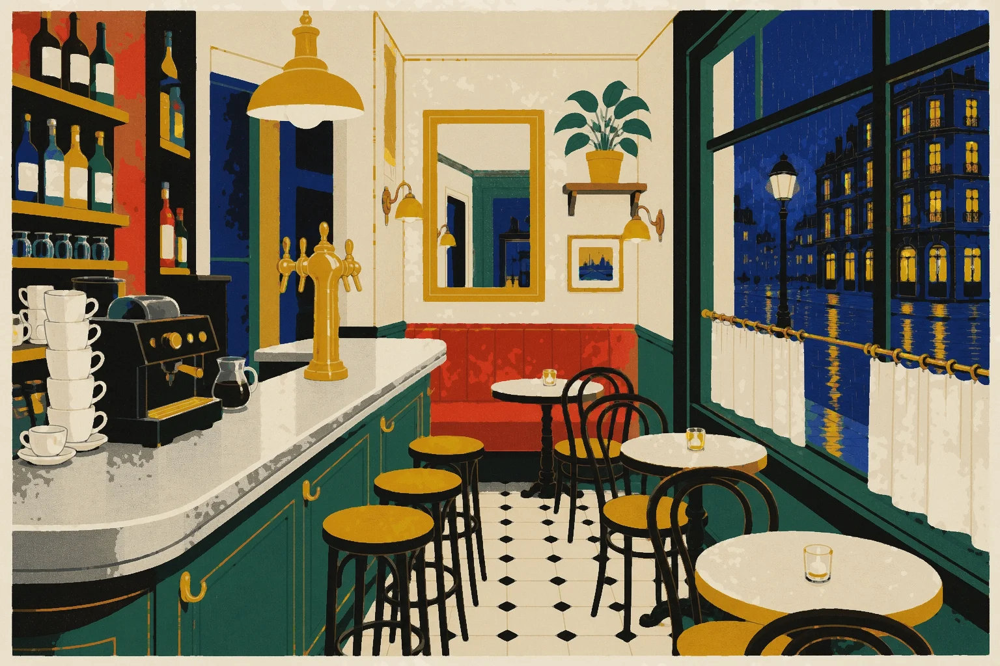
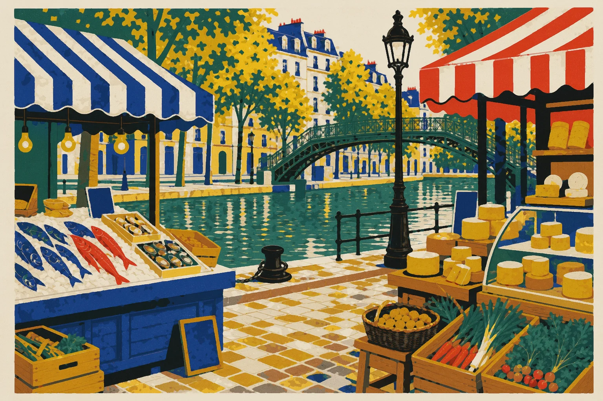

La Revue
Semaine 40
Des vendanges précoces en Bourgogne
Commencée hier · tu en étais à la question des prix.
WP-119 · La Revue de Romy · maquettes (spec : docs/implementation/atelier-v2/WP-119-DESIGN.md)
The states around the encounter: opening, a plate on the press, a week without a dossier, the model down, and resuming mid-way.
#loading · Opening /revue. The session plan is being built: the plate frame holds its size (stripes = the Artwork fallback), Romy's face says what is happening. No spinner.
Romy rassemble ses notes
#plate-pending · A new place, painting (phase 4). The reader's «sous presse» duotone, reused: the nearest known plate in grey with story-blue screened over it, and the folio pill. The painted plate cross-fades in when it lands; nothing moves.

Un vignoble en Bourgogne · sous presseUn vignoble en Bourgogne, fin septembre. Les rangs sont déjà vendangés.
Je dois expliquer les vendanges précoces en trois lignes pour demain, et je n’y arrive pas. Tu m’aides ?
.fr-plate .fr-art[data-pending] + .fr-ink. With REVUE_PLATE_GENERATION_ENABLED off there is no pending state at all: the fallback plate is final and Romy says where they really are (02).#evergreen · No dossier this week. An evergreen, labelled honestly twice: the label over the thread and Romy's own line. Romy's purpose stays editorial (her readers in Montréal), not a lesson.

Hors actualité · un classique de saison
Le marché du canal, un dimanche matin. Romy goûte un fromage, son carnet sous le bras.
Cette semaine, rien de solide à la rédaction. Alors je te montre un classique : le marché du dimanche. Tu m’aides à l’expliquer à mes lecteurs de Montréal ?
#model-down · Model unavailable. A quiet notice (dashed, triangle) and Romy's authored line. The route collapses to what needs no generation: the facts already shown, the headline choice, an authored close.
La conversation ne répond pas pour le moment. Les faits et le titre restent là ; tes notes sont gardées.
Et le prix du vin ?
Ma connexion lâche, ici. Je te laisse mes notes : on choisit le titre ensemble, et ta question, je la garde pour la semaine prochaine.
evergreen/guest_lines.json (Romy too). The learner's open question is kept in the conversation state and offered back next week.#resume-une · Resume · La Une. The card says where the learner left off, in one clause; the press reads «Reprendre avec Romy».
4jours de suite
La Revue
Semaine 40
Commencée hier · tu en étais à la question des prix.
#resume-page · Resume · /revue. The thread is replayed from the state; a hairline marker shows where today begins; Romy's first line picks up the thread.
Bonne question. Et là, je n’ai rien.
Les sources ne le disent pas
Les sources ne disent pas si les prix vont changer.
Te revoilà ! On en était aux prix. On l’écrit, cette question ?